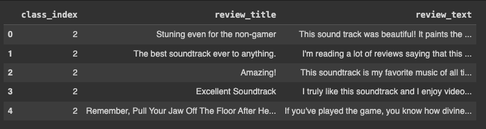
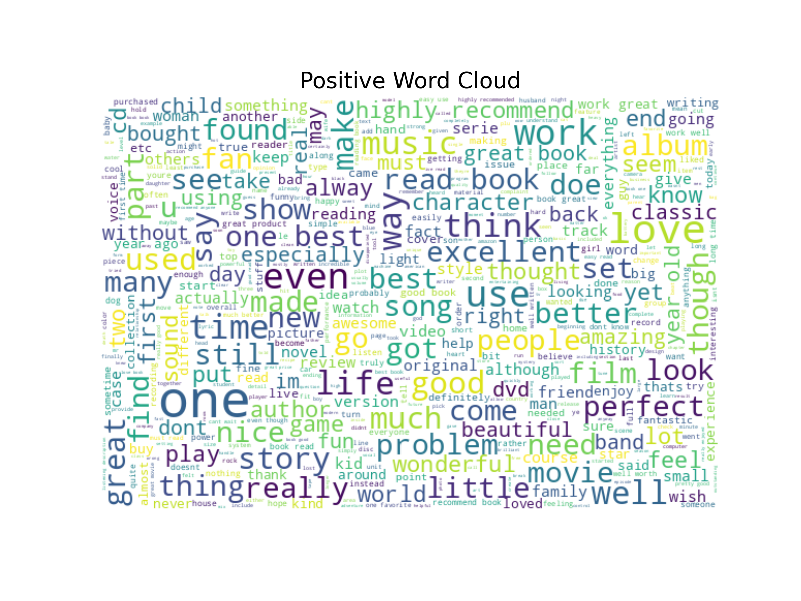
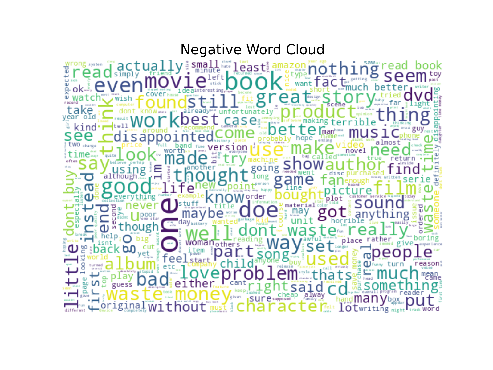
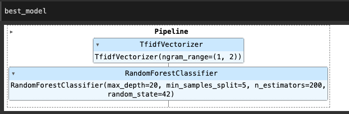
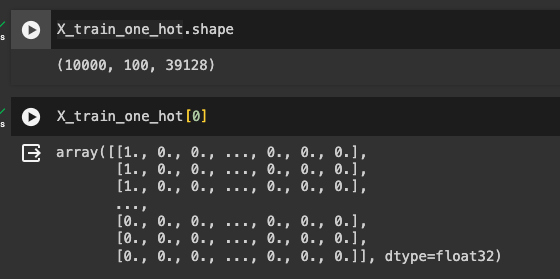
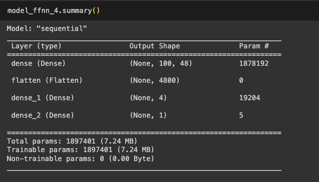
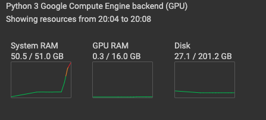
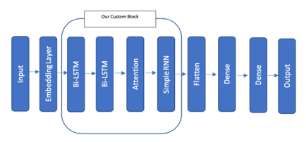

stop_words = set(stopwords.words('english')) - { 'not', 'no', 'couldn', "couldn't", "wouldn't", "shouldn't", "isn't",
"aren't", "wasn't", "weren't", "don't", "doesn't", "hadn't", "hasn't",
"won't", "can't", "mightn't","needn't","nor","shouldn","should've","should",
"weren","wouldn","mustn't","mustn","didn't","didn","doesn","did","does","hadn",
"hasn","haven't","haven","needn","shan't"}
def preprocess(text):
# Convert text to lowercase
text = text.lower()
# Remove punctuation
text = text.translate(str.maketrans('', '', string.punctuation))
# Tokenize text into words
words = word_tokenize(text)
# Remove stopwords
words = [word for word in words if word not in stop_words]
# Lemmatize words
lemmatizer = WordNetLemmatizer()
words = [lemmatizer.lemmatize(word) for word in words]
# Join the words back into a single string
text = ' '.join(words)
return textIntroduction
This article explores the use of deep learning models, such as feed forward neural networks (FFNN) and recurrent neural networks (RNN), such Bidirectional LSTM (BiLSTM) for sentiment analysis. This is one of our first project of deep learning where-in we have took this opportunity to build our basics strongly.
For the purpose of analyzing sentiment trends over an extended period, we utilize a substantial dataset consisting of 3 Million Amazon product reviews. This data, sourced from the Stanford Network Analysis Project (SNAP), spans 18 years, providing a rich longitudinal view of consumer sentiments. However, for our modeling we could use only 0.1 Million of the data considering our system constraints.

Each review includes a numeric score representing the sentiment polarity. Negative review is represented as class 1 while positive review is represented with class 2. This serves as a foundational metric for sentiment analysis
Data Preprocessing
In the preprocessing pipeline for sentiment analysis, the following steps were performed using nltk library : Punctuation Removal , Tokenization, Stopword Elimination and Lemmatization. Notably, the stopword list has been specifically curated to retain negations such as “not,” “no,” and other negatory contractions.
Data Visualization
 
This word cloud is characterized by a significant presence of highly positive terms such as “love,” “great,” “best,” “perfect,” and “excellent.” These words indicate strong satisfaction and enjoyment, commonly found in reviews that endorse a product. The words “highly recommend,” “amazing,” and “favorite” suggest that positive reviews often include recommendations and personal favoritism towards the products. The presence of words like “beautiful” and “enjoy” also emphasizes an emotional connection with the product.
The negative word cloud features words such as “disappoint,” “waste,” “poor,” “bad,” and “problem.” These strongly negative terms are indicative of dissatisfaction and issues with the products. Terms like “return” and “refund” suggest actions taken by dissatisfied customers. Words like “boring,” “dull,” and “worst” reflect critical opinions about the product’s quality or entertainment value.
Traditional Machine Learning
After conducting a thorough evaluation, we concluded that the Random Forest model outperformed SVM in multiple metrics, making it the preferred baseline model. This initial selection lays the foundation for further exploration and refinement of sentiment analysis techniques.

| Models | Hyper Parameters | Train Accuracy | Validation Accuracy | Test Accuracy |
|---|---|---|---|---|
| Random Forest with Count Vectorizer | Estimators : 200, Max Depth:20, Min Samples Split : 2 | 82% | 79% | 79% |
| Random Forest with TF-IDF | Estimators : 200, Max Depth:20, Min Samples Split : 5 | 86% | 83% | 84% |
Neural Networks
In our pursuit of advancing practical expertise in deep learning applications, we executed the following steps in a phased manner within the Neural Networks framework:
Preprocessing in neural networks
# Initialize a tokenizer with an out-of-vocabulary token
tokenizer = Tokenizer(oov_token="<UNK>")
# Fit the tokenizer on the training data to build the vocabulary
tokenizer.fit_on_texts(X_train)
# Add a special padding token to the word index with index 0
tokenizer.word_index['<PAD>'] = 0
# Convert the text data into sequences of token indices using the trained tokenizer
X_sequences_train = tokenizer.texts_to_sequences(X_train)
X_sequences = tokenizer.texts_to_sequences(X)
# Pad the sequences to ensure uniform length
# maxlen is set to 100, meaning sequences longer than 100 tokens will be truncated, and shorter sequences will be padded
X_train = pad_sequences(X_sequences_train, maxlen=100)
X = pad_sequences(X_sequences, maxlen=100)Feed Forward Network
| Models | Data Size | Train Accuracy | Validation Accuracy | Test Accuracy | Comments |
|---|---|---|---|---|---|
| Feed Forward Network | 10,000 to 3.6 million | 51% | 51% | 51% | Poor model |
The reason for its poor performance is likely due to the fact that the input words are represented as numerical numbers. In traditional machine learning, the representation of TF-IDF has shown better results. Therefore, the lesson learned is that we need to convert the input words into a better representation, such as one-hot encoding.
One Hot Encoding
Now, we have successfully converted the input data into one-hot vectors and we see that the number of parameters to be learned is also huge.


| Models | Data Size | Train Accuracy | Validation Accuracy | Test Accuracy | Comments |
|---|---|---|---|---|---|
| Feed Forward Network with one hot encoding | 10,000 | System Crashed | System Crashed | System Crashed | Sytem Crashed |
Immediately after this the system got crashed because of the size of vector and its computation even the computer size of 50 GB RAM could. not sustain.

therefore, the lesson learned is that we need to convert the input words into a better representation, like an embedding layer and then we performed on different architectures to explore the better fit for the model.
Neural Networks with Embedding Layer
| Models | Data Size | Train Accuracy | Validation Accuracy | Test Accuracy | Comments |
|---|---|---|---|---|---|
| Feed Forward Network with Embedding Layer | 10,000 | 100% | 85% | 85% | Overfitting |
| GRU with Embedding Layer | 10,000 | 100% | 80% | 80% | Overfitting |
| LSTM with Embedding Layer | 10,000 | 100% | 80% | 80% | Overfitting |
| Bi-LSTM with Embedding Layer | 10,000 | 100% | 81% | 81% | Overfitting |
| Bi-LSTM with Embedding Layer | 100,000 | 100% | 86% | 86% | Overfitting |
The reason for overfitting is likely because, given the size of the data, the embedding layer is attempting to learn model parameters within the vocabulary of the input data. However, during validation and testing, there may be many out-of-vocabulary words, leading to underperformance. However, when we increased the dataset to 100K, the accuracy improved. The lesson learned is that if we can input the data with pre-trained embeddings learned on a larger corpus, we can achieve a better and more balanced model.
Neural Networks with Pre-Trained Embedding Layer
| Models | Data Size | Train Accuracy | Validation Accuracy | Test Accuracy | Comments |
|---|---|---|---|---|---|
| Bi-LSTM with Pretrained twitter Embeddings of 50D | 10,000 | 90% | 85% | 84% | Decent Model |
| Bi-LSTM with Pretrained twitter Embeddings of 200D | 100,000 | 94% | 87% | 85% | Decent Model |
Given the success of pre-trained embeddings with larger dimensions, we aim to retain this learning and proceed to incorporate a more advanced architecture. The lesson we learned is that larger-dimensional embeddings capture richer attributes of words, which is beneficial. As part of our efforts to enhance the model’s learning, we decided to add an attention layer. This layer allows the model to focus on specific words, further improving its performance.
Bi-LSTMs with Attention Layer
We explored with three variants of attention. Couple of them are custom created and other is with Self Attention layer.
## Custom Made Simple Attention Layer
class Attention(tf.keras.Model):
def __init__(self, units):
super(Attention, self).__init__()
# Initialize the attention mechanism's parameters
self.W1 = tf.keras.layers.Dense(units, activation="tanh") # Dense layer to compute attention scores
self.V = tf.keras.layers.Dense(1) # Dense layer for the attention mechanism's weight calculation
def call(self, features):
# Compute attention scores
score = self.W1(features)
# Apply softmax activation to obtain attention weights
attention_weights = tf.nn.softmax(self.V(score), axis=1)
# Compute context vector as the weighted sum of features
context_vector = attention_weights * features
return context_vector## Custom Made Slightly Complicated Attention Layer
class Attention_Update(tf.keras.Model):
def __init__(self, units):
super(Attention_Update, self).__init__()
# Initialize parameters for the attention mechanism
self.W1 = tf.keras.layers.Dense(units, activation="tanh") # Dense layer to compute attention scores
self.V = tf.keras.layers.Dense(1) # Dense layer for attention weight calculation
def build(self, input_shape):
# Initialize trainable weights for attention mechanism
self.Wa = self.add_weight(name="att_weight_1", shape=(input_shape[-1], 8),
initializer="normal") # Weight matrix for context vector computation
self.Wb = self.add_weight(name="att_weight_2", shape=(input_shape[-1], 8),
initializer="normal") # Weight matrix for input features
self.b = self.add_weight(name="att_bias_2", shape=(input_shape[1], 8),
initializer="zeros") # Bias term for context vector computation
super(Attention_Update, self).build(input_shape)
def call(self, features):
# Compute attention scores
score = self.W1(features)
# Apply softmax activation to obtain attention weights
attention_weights = tf.nn.softmax(self.V(score), axis=1)
# Compute context vector as the weighted sum of features
context_vector = attention_weights * features
# Update the hidden state using attention mechanism
new_hidden_state = tf.tanh(tf.matmul(context_vector, self.Wa) + tf.matmul(features, self.Wb) + self.b)
return new_hidden_state# Define input layer with shape (100,)
inputs = Input(shape=(100,))
# Create an embedding layer with pre-trained weights
# vocab_size: size of the vocabulary
# output_dim: dimension of the embedding space
# input_length: length of input sequences
# weights: pre-trained embedding matrix
# trainable: set to False to keep the pre-trained weights fixed during training
embedding_layer = Embedding(input_dim=vocab_size, output_dim=200, input_length=100, weights=[embedding_matrix_twitter_200d], trainable=False)(inputs)
# Apply bidirectional LSTM to capture contextual information
bilstm = Bidirectional(LSTM(4, activation='tanh', return_sequences=True))(embedding_layer)
# Apply self-attention mechanism to focus on important features
context_vector = SeqSelfAttention(attention_activation='sigmoid')(bilstm)
# Apply SimpleRNN to capture sequential patterns
simplernn = SimpleRNN(4, activation="tanh")(context_vector)
# Output layer with sigmoid activation for binary classification
output = Dense(1, activation="sigmoid")(simplernn)
# Define the model
model_lstm_bi_embed_selfattention = Model(inputs=inputs, outputs=output)| Models | Data Size | Train Accuracy | Validation Accuracy | Test Accuracy | Comments |
|---|---|---|---|---|---|
| Bi-LSTM with Pretrained twitter Embeddings of 200D - Simple Attention | 100,000 | 94% | 90% | 90% | Good Model |
| Bi-LSTM with Pretrained twitter Embeddings of 200D - Slightly Complicated Attention | 100,000 | 94% | 89% | 90% | Good Model |
| Bi-LSTM with Pretrained twitter Embeddings of 200D - Keras Self Attention Layer | 100,000 | 94% | 90% | 90% | Good Model |
All these models performed equally well; however, our intention is to create an even better model. Therefore, we proceeded to develop a custom model consisting of two bi-LSTMs with a simple attention layer, followed by an RNN, two feedforward networks, and finally, a softmax layer.
Custom Made Neural Network Block

This Block we feel it can enhance sentence comprehension by learning relevant words and their dependencies within the sentence. It consists of several components that work together to achieve this goal:
Combining Two Bi-LSTMs: This increases its complexity and enables it to learn sentence context in both forward and backward directions. This helps to capture a more comprehensive understanding of the text.
Attention Layer: It focuses on relevant words within the sentence, allowing the model to concentrate on key information while disregarding irrelevant details. This mechanism helps to improve the overall accuracy of the model.
Simple RNN: It helps to learn and capture relevant parameters based on context. This facilitates the understanding of word dependencies within the sentence and enables the model to achieve more accurate sentiment analysis.
Notably, this block operates without a dense layer. Instead, it focuses on leveraging Bi-LSTMs, attention mechanisms, and simple RNNs to achieve effective sentence comprehension and sentiment analysis. However, dense layers can be introduced to the model to introduce more complexity and enable interactions between words and their attributes, thus improving overall comprehension and analysis.
# Define hyperparameters
lstm_units = 64
attention_units = 96
rnn_units = 64
dense_units = 128
learning_rate = 0.001
# Define input layer with shape (100,)
inputs = Input(shape=(100,))
# Create an embedding layer with pre-trained weights
embedding_layer = Embedding(input_dim=vocab_size, output_dim=200, input_length=100, weights=[embedding_matrix_twitter_200d], trainable=False)(inputs)
# Apply bidirectional LSTM layers with regularization
bilstm = Bidirectional(LSTM(lstm_units, activation='tanh', return_sequences=True, kernel_regularizer=l2(0.0001)))(embedding_layer)
bilstm = Bidirectional(LSTM(lstm_units, activation='tanh', return_sequences=True, kernel_regularizer=l2(0.0001)))(bilstm)
# Apply attention mechanism
context_vector = Attention(attention_units)(bilstm)
# Apply SimpleRNN layer with regularization
simplernn = SimpleRNN(rnn_units, activation="tanh", return_sequences=True, kernel_regularizer=l2(0.0001))(context_vector)
# Flatten the output for feedforward layers
flatten = Flatten()(simplernn)
# Apply two feedforward layers with regularization
ffn = Dense(dense_units, activation='relu', kernel_regularizer=l2(0.001))(flatten)
ffn = Dense(dense_units, activation='relu', kernel_regularizer=l2(0.001))(ffn)
# Output layer with sigmoid activation for binary classification
output = Dense(1, activation="sigmoid")(ffn)
# Define the model
model_lstm_bi_embed_attention_complex_regularized_tuned = Model(inputs=inputs, outputs=output)
# Compile the model
optimizer = keras.optimizers.Adam(learning_rate)
model_lstm_bi_embed_attention_complex_regularized_tuned.compile(optimizer=optimizer, loss='binary_crossentropy', metrics=['accuracy'])
# Print model summary
model_lstm_bi_embed_attention_complex_regularized_tuned.summary()| Models | Data Size | Train Accuracy | Validation Accuracy | Test Accuracy | Comments |
|---|---|---|---|---|---|
| Final Custom block model with hyper tuned parameters | 100K | 91% | 91% | 91% | Balanced Model |
Conclusion
Neural networks, when fine-tuned, regularized, and expanded, possess a great capacity to arrive at a better model. While traditional machine learning approach has given us 85% accuracy, the inherent flexibility of neural networks enables us to create of more sophisticated/complicated models. These models we feel are better to capture intricate patterns within the data, ultimately leading to superior performance.
We found great fulfillment in undertaking this project, prioritizing our learning journey beyond the confines of grading rubrics. It provided us with invaluable insights and a deeper understanding of the intricacies involved.
Entire code can be downloaded from this link.